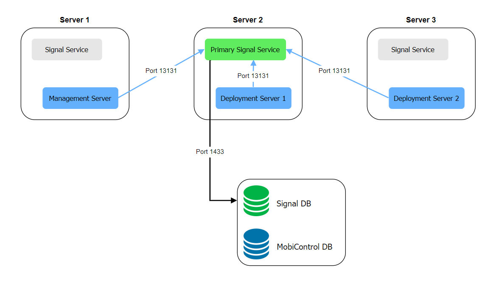

Installing and Troubleshooting Signal Service
Overview
Signal Service automatically installs as part of SOTI MobiControl 15.6 or later Management Server (MS) and Deployment Server (DS). You cannot opt out of installing Signal Service.
In SOTI MobiControl 2025.1.0 and later, if the primary Signal Service goes down, a secondary Signal Service automatically takes over as the primary.
By default, the primary Signal Service is hosted on the initial server where the SOTI MobiControl installer (15.6.0 or later) is run. The MS and DS also default to connect to the Signal server on TCP port 13131.
In SOTI MobiControl 15.6.1 and later, you can change the Signal Service address, port, and Primary Signal Service designations in the SOTI MobiControl Administration Utility.
The Signal host environment requires the following installed:
- .NET Runtime 8.0
- ASP.NET Core Runtime 8.0
Signal Network Diagram
The following diagram illustrates an example multi-server environment with Signal configured.
Troubleshooting
- Monitor the health of the Signal service
- Start, stop, and restart the Signal service
- Change the log settings
- View certificates
Signal Service issues arise when the SOTI MobiControl Management Server and Deployment Server fail to communicate with the Signal server. This can lead to the following:
- Inability to view or save Signal policies in SOTI MobiControl.
- Expected Signal policy actions to not occur (for example, those shown in the Execution History or Logs tabs of the Signal Policy detailed view).
- Signal connection errors (such as
Exception: Connect - Could not connect to Signal server) to appear in the MS and DS log files.
Perform the following steps to resolve these connection issues:
- Confirm the Signal Service is running in the Windows Services Manager application. Start the service if it is not running.
- Check for errors in the Signal log located at
C:\ProgramData\SOTI\Soti.Signal.log. Certificate errors
in the log may indicate a configuration problem with the client certificates
sent by SOTI MobiControl. To get more details, increase the logging
level for the Signal
Server.
Edit the line under logging for Signal in
C:\Program Files\SOTI\Signal\appsettings.json
to:"Soti.Signal": "Debug"Note: The logging level is set to Error by default.You must restart the Signal Service for the changes to take effect.
- A
No server certificate founderror means that there are no certificates in the Windows Local Computer Personal store that match the Signal Service address for the configured URL. Install a matching server certificate on the system. - If there are no attempts to connect to Signal, check for routing, DNS, or firewall configurations that might prevent the MS or DS from communicating with the Signal server. The MS and DS connect to the Signal server on TCP port 13131 by default.